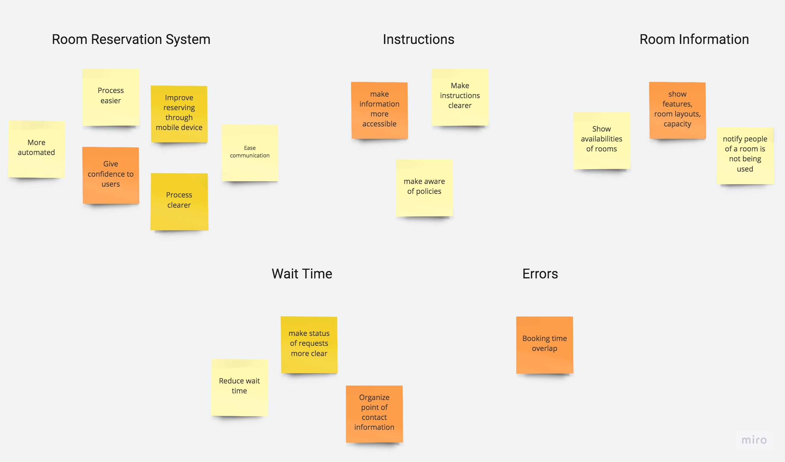
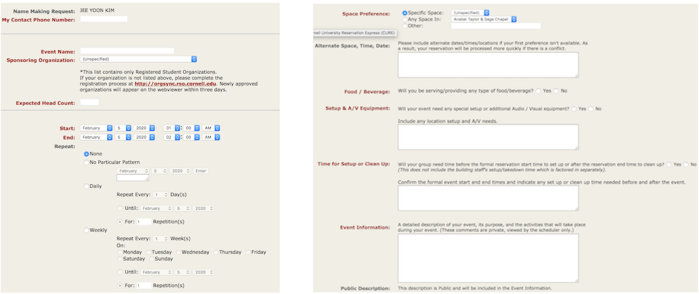

CURE eases the space reservation system of Cornell University
Cornell University's three different space reservation systems allow users to reserve various spaces and rooms in Ithaca campus. Reserving process should be concise and fast, not overwhelming. CURE(Cornell University Reservation Express) consolidates existing systems and provides a delightful reservation experience.
ROLE: Product Manager & Product Designer •
TEAM: 3 Product Managers •
Nov 2019 - Feb 2020
⚠️ Product thinking & management were done with a team from 8-week Product Development course. After finishing the course, I individually developed iOS application prototype.
People Problem
As an active member of various clubs in Cornell,
I want to reserve a space for club activities, but I cannot because instructions and policies for current room reservation solutions are hard to find and confirmation for the space requests takes too long.
Target Audience
Cornell University students who want to reserve a room, especially for club officers.
User Research
Ambiguous instructions, system, and no guarantee for reservation confirmation make users hard to reserve.
Three existing systems, R25, Libcal, and Cornell Spaces handle a lot of reservable spaces through different methods of reservation: submiting forms, making phone calls, sending emails, and attending board committee meeting. These solutions feel overwhelming and frustrating:
"Multiple rounds of Google search to find instructions are uncomfortable."
"Reservation confirmation depends on how busy the staff is; Once, staff did not replied to my reservation request emails, so I had to send reminder emails."
"I had to submit multiple forms and emails again because the space was not available for the desired time."
There is no confidence that a space is available to reserve at desired time before receiving confirmations, no guideline for what information to include when sending reservation requests, and emails are hard to track.


IDEATION
How might we make reservation experience less overwhelming?
Facilitate Reservation Process
Users must be guided with clear instructions in a consolidated system. With a form asking required information for reservation, users are able to provide all necessary information at once.
Reduce Time
Knowing availability of the space prior to sending reservation request will reduce confirmation time. An active and responsive space for communication with staff members is also helpful.
First of all, we wrote down and made an affinity diagram on what to improve from the current reservation system:
After exploring, we focused on two objectives: facilitate reservation process and reducing time until receiving confirmation. We asked ourselves questions such as: how can we unify different reservation methods? how can we unify instructions? how can we reduce the number of emails to schedule a reservation and keep track the process? how can we make users easily track communications?
Facilitate reservation process
From user interviews, we confirmed that users prefer clearly guided forms asking for all the necessary information to emails as a means of reserving room. Our product will have a “form” that will be delivered to the responsible staff member. By combining the contact lists into a unified form on a single website, we seek to provide users with an organized standard webpage. Inspiration is from R25 forms.
Reducing time for reservation
To prevent from overflowing email communication scheduling the reservation time, our product will present all availabilities like Libcal. Since users know that availability of the space, time for reservation will reduce significantly. Also, each request will have icons indicating its status - for example, “received,” “pending,” and “confirmed”. Inspirations are from Cornell student center, Libcal, status bar like Dominos and Grubhub.

Moreover, we thought of a unique communication space that will allow users to ask questions to responsible staffs. Instead of email, new channel like chatbot or direct message system will be incorporated within the website. In this manner, users are able to track communications easily.
HIGH FIDELITY DESIGN EXPLORATIONS

Form user flow Steps for reserving space: select room → view availability → select time → provide basic information. Once the room is chosen, availability bar appears. When different room is chosen, options on the availability bar changes. In this manner, users are allowed to stream locations and check the availability in one screen.

List of availability 1 After the user testings with Option A, I realized that users are confused with the structure. Most of the users did not recognize the instruction and not clicked the lists of locations. They instead focused on ‘Select Your Space’ message at first. Reflecting on the user feedback, I chose Option C as my final prototype.

List of availability 2 After the user testings with Option A, I realized that users are confused with the structure. Most of the users did not recognize the instruction and not clicked the lists of locations. They instead focused on ‘Select Your Space’ message at first. Reflecting on the user feedback, I chose Option C as my final prototype.

List of availability 3 After the user testings with Option A, I realized that users are confused with the structure. Most of the users did not recognize the instruction and not clicked the lists of locations. They instead focused on ‘Select Your Space’ message at first. Reflecting on the user feedback, I chose Option C as my final prototype.

Select date I chose option E over option D in order to reduce restrictions on horizontal width. Option D had difficulty on clicking dates on mobile device screen.

Messages Option F has a preview of messages and divides current and past reservations while Option G is a list. However, I considered past reservations label unnecessary because this screen is for messages. Also, during user testing, some users had confusion on where to click to view the new message. Thus, I used option G.
PRODUCT OVERVIEW
CURE provides space availabilities, reservation status, and instructions through forms.
Availability Bar
View & compare availabilities of selected space.
Request Forms
Fill in all necessary information needed for reservation at once.
Status Tracker
Track reservation status - received, being reviewed, or confirmed.
Direct Messages
Communicate with reservation staff members with built in messenger.
FULL PROTOTYPE


🙌🏻 CURE is my first product thinking and product design project.
8-week of Product Development course was very meaningful to me. I learned how to develop an idea to solve a problem that I identified and ideate to create a minimum viable product. In product thinking process, it was challenging to prioritize possible features of the product that improve user's experience. Conducting multiple user interviews helped our team to narrow down user's key pain point and decide features to include. This course also gave me great team work experience that we collaborated and shared own thoughts at weekly meetings.
After the course, I individually designed a iOS prototype. I learned that every design element has a purpose and practiced to view a product from user's perspective. I challenged to making better design decisions through explorations and iterating design and testing.